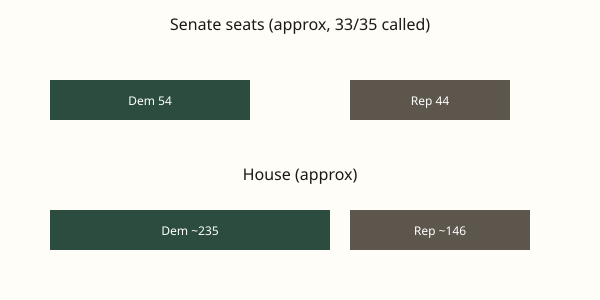

United States · Elections · 5 November 2026
Democrats take control of both chambers of Congress after 3 November midterm elections

What is agreed across desks
The Associated Press and Reuters reported that Democrats secured majorities in both the U.S. Senate and the House of Representatives following the midterm elections held on 3 November 2026. Senate projections showed Democrats with at least 54 seats to Republicans’ 44, with two races still uncalled as of early 5 November. House estimates placed Democratic gains at roughly 25 to 30 seats or more, producing a clear majority. Specific flips included the Texas Senate seat (James Talarico over Ken Paxton), South Carolina (Annie Andrews over Darline Graham), Kansas (Adam Hamilton over Roger Marshall), Ohio (Sherrod Brown over Jon Husted), Iowa, Maine, and North Carolina. These calls rest on vote tallies certified or projected by the AP’s race-calling system and parallel counts by Reuters and other outlets.
The change returns full Democratic control of Congress for the first time in several years and ends unified Republican control of the White House and both chambers. Under the U.S. Constitution, the new majorities will take their seats in January 2027. Until then the current Congress continues to operate. The results do not themselves alter existing statutes or executive orders; they change the composition of the bodies that can pass laws, confirm nominees, and conduct oversight.
What is only a quote or projection
Statements that the election constitutes a “repudiation,” a “tsunami,” or the “beginning of the end of the Trump era” appear in campaign speeches, opinion columns, and some news analyses. Those characterizations are interpretations of the vote totals, not independent measurements. Exit-poll data cited by multiple outlets indicated that cost of living, the Iran war, and other issues ranked high among voter concerns, but the precise weight of each factor cannot be extracted from the seat counts alone. Projections of future legislative success or 2028 presidential implications remain forecasts.
Mechanism and context
Midterm elections occur two years after a presidential election. The party that holds the White House has historically lost seats in Congress in most midterms; the size of the loss varies with economic conditions, war involvement, and presidential approval. In 2026 the sitting president was Donald Trump. Republican-led redistricting efforts in several states were offset by court rulings and by a California map that flipped five Republican-held seats. The Senate map included several Republican-held seats in states that had voted for Trump in 2024; those seats flipped according to the AP.
The House has 435 voting members. A majority requires 218 seats. The Senate has 100 members; a majority is 51, or 50 if the vice president breaks ties. Independent senators who caucus with a party are counted with that party in majority calculations. Two Senate races (Alaska and Mississippi) remained too close to call in the earliest reports on 5 November.
What the story is not
The seat totals do not prove that any single policy caused the outcome. They do not establish that Democratic majorities will pass any particular bill or that the president will be unable to act through executive authority. They do not settle the remaining uncalled races. They do not constitute a legal finding about the fairness of any individual election; challenges, if any, would proceed through state and federal procedures.

Source articles and scores
| Outlet | Headline | T | N | C |
|---|---|---|---|---|
| AP | 2026 Midterm Election Results: Senate, House and Governor Races | 95 | 0 | 100 |
| Reuters | Democrats flex congressional majorities as Trump accepts electoral losses | 94 | +5 | 95 |
| Reuters | Top takeaways from the US midterm elections | 93 | 0 | 100 |
| NPR | 2026 election: Democrats win full control of Congress | 92 | 0 | 100 |
Image credits: Commons File:United_States_Capitol_-_west_front_edit.jpg (public domain). Chart is original SVG.